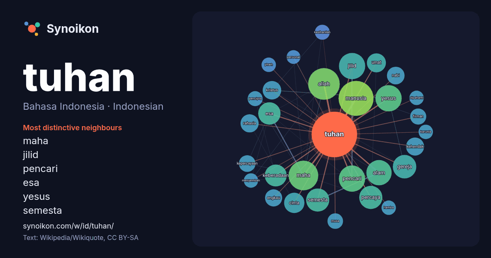

Bahasa Indonesia · Indonesian · popular word
tuhan
“god” · The words found around it in 1319 instances from Indonesian Wikipedia, Wikiquote.

Most distinctive neighbours
- maha 42×
- jilid 36×
- pencari 35×
- esa 27×
- yesus 26×
- semesta 24×
- allah 23×
- kehendak 18×
- keberadaan 17×
- manusia 17×
- percaya 16×
- kristus 16×
- firman 14×
- engkau 14×
- kasihanilah 14×
- alam 14×
- rahasia 13×
- nabi 13×
- musa 13×
- yhwh 13×
× = how many times more often than in general Indonesian Wikipedia text.
Most frequent neighbours
- manusia 71
- allah 58
- maha 51
- orang 50
- jilid 40
- pencari 40
- yesus 40
- alam 37
- bahasa 37
- gereja 32
- percaya 31
- semesta 31
- esa 29
- keberadaan 28
- indonesia 26
- nama 26
- agama 25
- cinta 24
- umat 21
- hidup 20
In context
- monoteistik, Tuhan biasanya dipandang sebagai wujud tertinggi, pencipta, dan objek utama dari iman. Tidak ada kesepakatan bersama mengenai konsep ketuhanan, sehingga Wikipedia snippets · Tuhan
- disangkal, dan Yahweh dicanangkan sebagai pencipta alam semesta, sebagai Tuhan satu-satunya yang menjadi pemilik sejati seluruh alam semesta. Edelman 1995 Wikipedia snippets · Yahwe
- Dalam konsep Islam, Tuhan disebut Allah (bahasa Arab: الله) dan diyakini sebagai Dzat Maha Tinggi Yang Nyata dan Esa, Pencipta Yang Maha Kuat dan Maha Wikipedia snippets · Allah (Islam)
- Para Pencari Tuhan adalah serial televisi Indonesia yang ditayangkan setiap hari selama bulan Ramadan di SCTV sejak 2007. Serial ini diproduksi oleh PT Wikipedia snippets · Para Pencari Tuhan
- Tuhan, Izinkan Aku Berdosa adalah film drama Indonesia tahun 2023 yang disutradarai oleh Hanung Bramantyo berdasarkan novel berjudul Tuhan, Izinkan Aku Wikipedia snippets · Tuhan, Izinkan Aku Berdosa
- Tuhan, Benarkah Kau Mendengarku? adalah film drama religi Indonesia yang dijadwalkan tayang di bioskop Indonesia pada 29 Januari 2026. Film ini diproduksi Wikipedia snippets · Tuhan, Benarkah Kau Mendengarku?
- Sepuluh Perintah Allah, dikenal pula dengan istilah Sepuluh Firman Tuhan, Dasa Titah, atau Dekalog (bahasa Yunani: δέκα λόγοι), adalah satu kumpulan prinsip Wikipedia snippets · Sepuluh Perintah Allah
- Puji Tuhan KJ 10 — Pujilah Tuhan, Sang Raja KJ 11 — Anak-Anak, Mari Nyanyi KJ 12 — Anak-Anak, Pujilah KJ 13 — Allah Bapa, Tuhan KJ 14 — Muliakan Tuhan Allah Wikipedia snippets · Kidung Jemaat
More Indonesian words
- air
- anjing
- bahasa
- emas
- iklim
- jantung
- jembatan
- kebenaran
- kehidupan
- kekuasaan
- keluarga
- kematian
- kereta
- kerja
- kesehatan
- kesenian
- kucing
- lingkungan
- makanan
- sains
- sejarah
- uang
Precomputed on 2026-10-09 with default settings (±5 words, medium corpus). The interactive map can refresh it with live data.